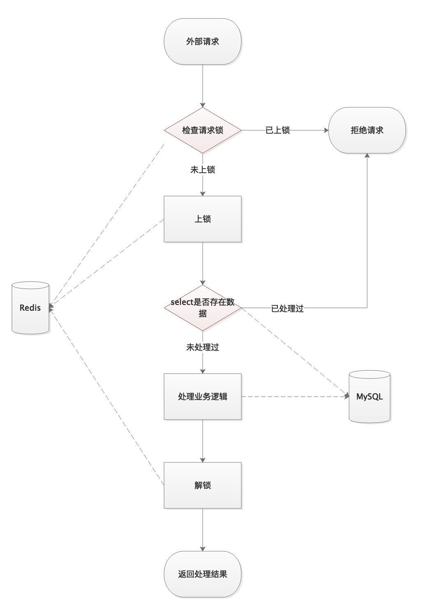
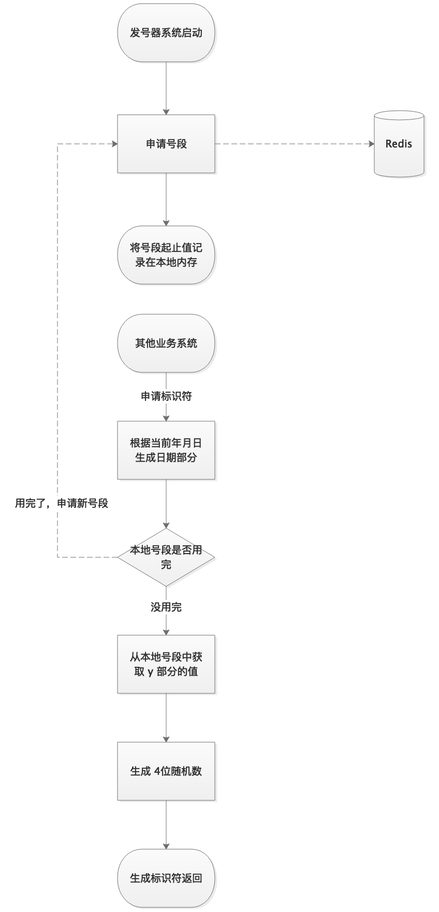
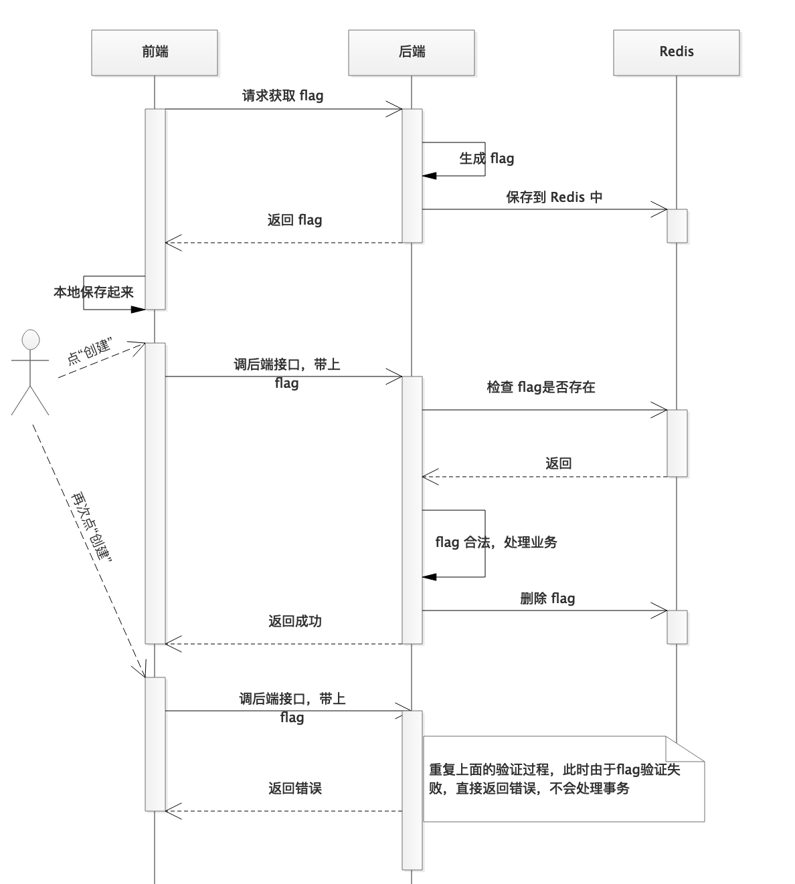
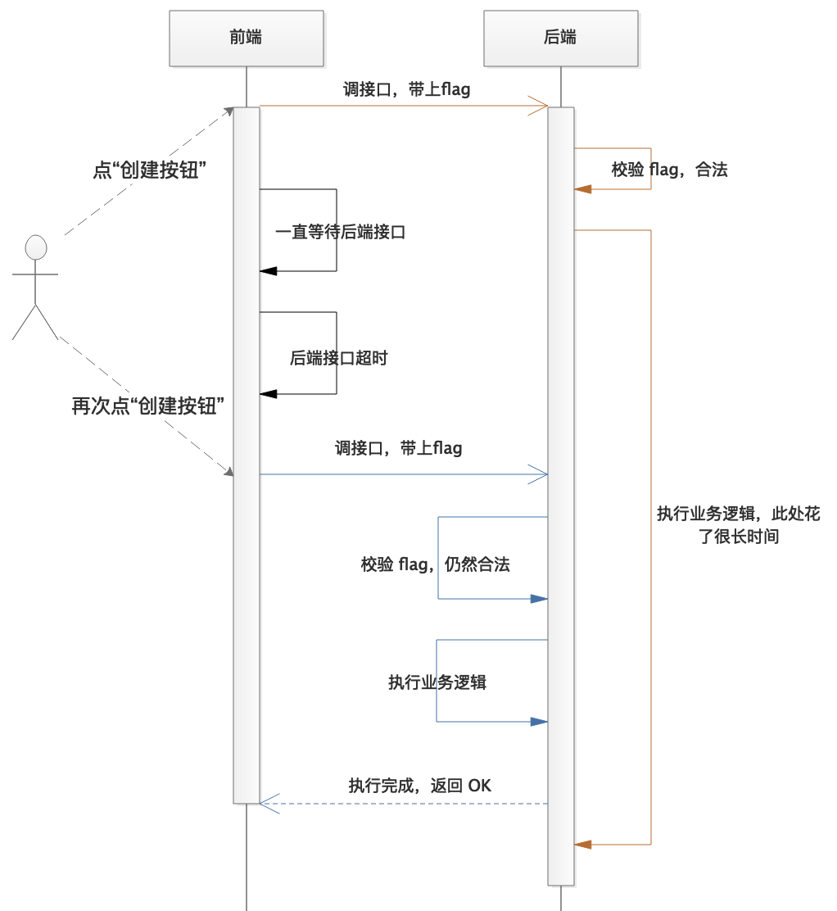
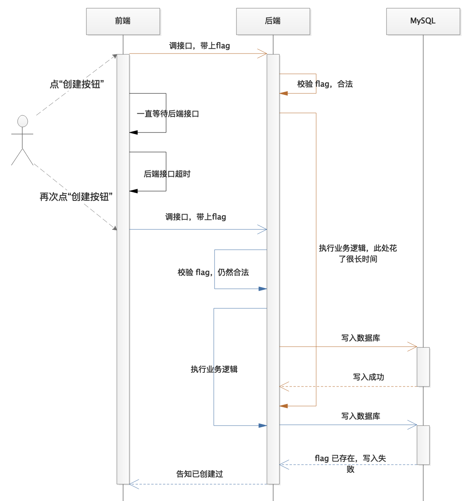
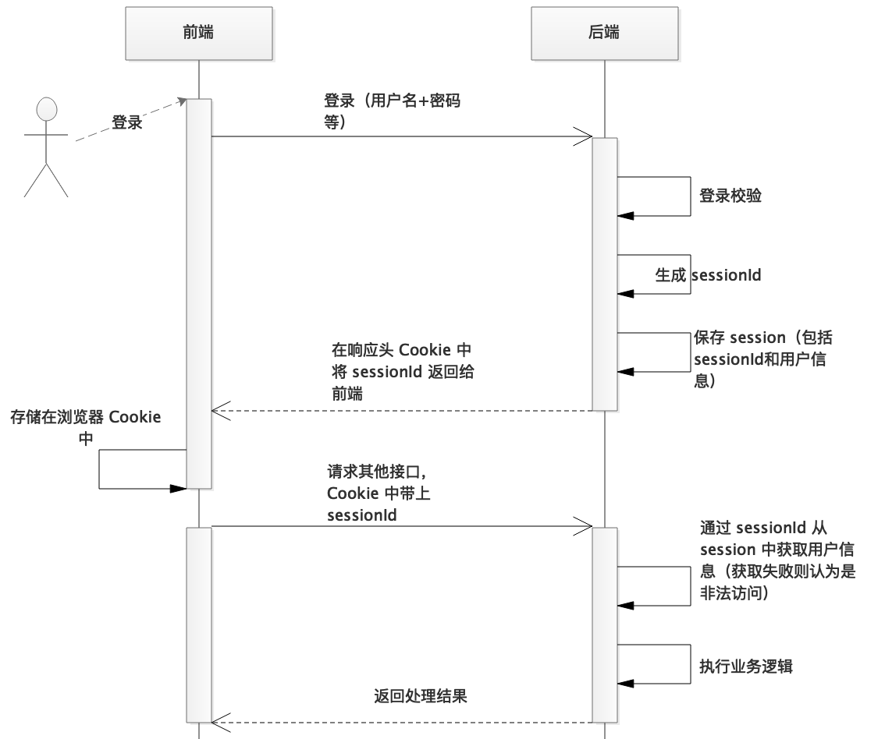

API Design Matters
The Non-Functional Dimensions of API Quality
Many programmers focus solely on functional correctness when building APIs. However, what truly determines API quality is its non-functional aspects. Unfortunately, this dimension is underappreciated across many organizations, spanning product management, development, and testing.
The non-functional dimensions of API design can be distilled into three key pillars:
- Idempotency
- Robustness
- Security
1. Idempotency
Imagine spending 1,000 yuan at the supermarket, only to find your bank card was charged 2,000. How would you feel?
(You and I will never experience this — any financial software making such a fundamental blunder would not survive long in the market.)
This double-charging problem brings us to the concept of API idempotency.
Idempotency guarantees that write operations produce correct data even when invoked repeatedly. This is particularly crucial in data creation flows and non-idempotent updates (such as deducting a balance), whereas resource deletions are typically idempotent by nature.
We cannot predict how clients will call our APIs. Network requests can time out, or callers may have implementation bugs (such as a UI that allows rapid double-clicks). Good API design must treat duplicate requests as a normal occurrence. If redundant calls corrupt data, the fault lies with the API provider, not the client.
Implementing idempotency typically spans two layers: the business logic layer and the database layer.
Business Logic Layer: Select-Then-Insert
This approach is highly common. Before writing or modifying data, you query the database using the request parameters (such as the user ID or order ID) to verify if the transaction has already been processed. This prevents duplicate operations (such as double-crediting points or double-charging a card).
The main advantage is its simplicity and alignment with standard business flows. When product managers and developers design system workflows, they naturally include these lookup checks, making it the most intuitive approach. Because this approach is intuitive, most production systems already implement some form of it.
However, a simple select-then-insert cannot resolve concurrency issues. When redundant requests arrive in rapid succession—such as a user rapidly double-clicking a button (without frontend rate limiting) or a bot farming rewards—two requests can hit the server nearly simultaneously. Both execute the database query at the same instant, both find no existing record, and both proceed to write duplicate data.
Consequently, in high-stakes scenarios (like issuing coupons or crediting points), requests must be mutually exclusive at the user level: only one request per user should be processed at a time, forcing duplicate requests to serialize.
To achieve this, we can implement a distributed lock using Redis. We generate a lock key from relevant request parameters—for example, 'userId + scenarioId' when crediting points. When a request arrives, the application checks if the lock key already exists. If it does, the request is immediately rejected; otherwise, it acquires the lock and proceeds. This guarantees exclusive execution.

However, if your database uses read-write separation, the locking approach may still allow duplicates. Once the business logic finishes, the lock is released. A duplicate request can then arrive before the newly written data has replicated to the read replica; the query returns empty, and the business logic runs again (resulting in double-credited points). A replication delay of a few milliseconds may seem negligible, but automated scripts exploit it easily.
To address this, we must enforce constraints at the database level.
Redis Distributed Lock
Redis's high performance, concurrent throughput, and single-threaded execution model (which guarantees atomicity) make it ideal for implementing distributed locks. However, several implementation details require careful attention.
We typically acquire a lock using the SET command with the NX option:
SET lock_key private_val EX 20 NXThis creates a lock key (lock_key) with a 20-second expiration. The crucial parameter here is NX, which tells Redis to only set the key if it does not already exist. This single atomic command replaces the older, multi-step SETNX workflow while natively supporting a Time-To-Live (TTL).
When it comes to releasing the lock, is a simple DEL lock_key sufficient? No, because a process must only release a lock that it actually owns. If we run a plain delete, we risk releasing a lock acquired by another process (for example, if our process took longer than 20 seconds, its original lock expired, another process acquired it, and we then deleted it on completion).
Therefore, we must verify ownership before deleting the key:
GET lock_key
DEL lock_keyBut does this multi-step lookup solve the issue? Not quite: executing these as two separate Redis commands lacks atomicity. A race condition could occur between the check and the delete, and it also requires two network round trips. The optimal approach is to execute a Lua script via Redis's EVAL command, guaranteeing absolute atomicity (supported natively by virtually all Redis client SDKs):
EVAL "if (redis.call('get', KEYS[1]) == ARGV[1]) then redis.call('del', KEYS[1]); end; return 1;" lock_key private_valDatabase Layer: Unique Key Constraints
We can leverage database unique constraints to strictly guarantee idempotency at the storage engine level.
Consider a prepaid card payment scenario. In an e-commerce platform, paying with a prepaid card involves at least two core operations:
- Creating a transaction record (detailing the order ID and the payment amount);
- Deducting the corresponding balance from the customer's prepaid account.
Without robust idempotency, the same order could trigger duplicate payment records and double-charge the card, leading to severe customer disputes.
Beyond the "lock + query + insert" pattern, we can introduce a unique database index. If an order can only be paid once, we can mark the order ID as a unique key in the transaction table. If a duplicate request attempts to insert another payment record, the database will throw a unique key violation, aborting the insert. Since the balance deduction and transaction insertion run within the same database transaction, the balance write will roll back as well.
Other use cases may require composite unique indexes. For daily check-ins, where a user can only check in once per day, we can define a composite unique key on 'userId + date'.
For scenarios without a natural unique identifier—such as incrementing/decrementing points or issuing general-purpose coupons—you must introduce a dedicated deduplication field. We can add a uniqid column backed by a unique index. The question then becomes: how do we generate this uniqid?
In these cases, the API provider cannot derive a reliable unique identifier solely from the incoming parameters. Instead, the client must supply it. When the backend records the action (like granting a coupon), it saves this client-provided uniqid. If the identifier has already been processed, the unique constraint will block the write.
How do we guarantee that the client's identifier is truly unique? If it collides with an unrelated transaction, that transaction will be incorrectly blocked.
There are two standard approaches to this:
- The client generates the identifier using a standard, deterministic rule;
- The API provider offers a separate, dedicated ID-generation endpoint.
If client-side generation is preferred, applications can use standard UUID algorithms. UUIDs offer excellent uniqueness guarantees, but they are relatively long (at least 16 bytes when stored raw, or 36 characters as a string) and unordered, making them poorly suited for MySQL B+ tree index sorting. A better alternative is Twitter's Snowflake algorithm, which generates sequential, highly indexed 64-bit integers.
If your concurrent load is modest and you prefer not to rely on clients generating IDs, you can expose a centralized ID generator service within your ecosystem.
The ID generator can run standard UUID or Snowflake algorithms, or implement a custom, human-readable scheme. For example:
Generate identifiers using the format xxxxxxxxyyyyyyyyyyyyzzzz, where x represents the current date, y is a 12-digit auto-incrementing daily sequence, and z is a 4-digit random padding (to mitigate collisions in case of sequence anomalies). Even ignoring the random padding, this scheme accommodates up to 900 billion unique identifiers per day.
Since ID generators typically scale across multiple servers, we must prevent sequence collisions. We can utilize a centralized Redis instance to manage the daily incrementing sequence y.
However, querying Redis for every single ID would introduce a severe bottleneck. To optimize this, the generator can fetch IDs in batches: it reserves a range of values (say, 10,000 increments) from Redis in a single call, stores this range in local memory, and only queries Redis again once the local pool is exhausted.
These cached ranges are held in the application's process-level memory. If the generator service restarts, it abandons any unused portion of the current batch and requests a new range from Redis. Consequently, the batch size should be kept reasonable to avoid wasting large gaps of sequences during redeployments.

Summary of database-driven idempotency:
- Best suited for insert (creation) scenarios, particularly transaction-and-ledger patterns (balance updates, points, likes, etc.);
- Prefer utilizing natural business fields for uniqueness constraints (such as an order number in a payment record) or composite keys (combining 2–3 fields);
- When no natural business fields exist, introduce a dedicated deduplication field enforced by a unique database constraint, and require the caller to supply the token;
- Guarantee client-side token uniqueness using UUIDs, Snowflake IDs, or a custom sequence, either self-generated or managed via a centralized generator service;
- ID generators must be horizontally scalable and guarantee absolute uniqueness across the application cluster;
- Database-level unique constraints are highly effective when paired with application-level request locks and "select-then-insert" validations.
What to Return for Duplicate Requests
When the API provider detects that a request has already been processed (for instance, if the client retried after a network timeout), how should it respond?
A common reflex among developers is to treat duplicate requests as errors and return an error code. However, this often complicates client-side integration and can compromise data consistency.
The simplest and most robust approach is to return a success status. If your API uses a unified success code (such as code=200), you should return that directly.
Some engineering teams define separate success code ranges. In this setup, you can differentiate between "operation executed" and "operation already processed" using distinct payload metadata (e.g., returning 200 for a fresh write and 201 for a deduplicated transaction). This provides the client with clear diagnostic context without breaking its success-handling logic.
Frontend-to-Backend Idempotency
Consider this scenario:
An administrator clicks "Create" in a dashboard to generate a coupon. Because of a slow network connection, nothing seems to happen immediately. The administrator clicks the button several more times out of frustration. Upon checking the coupon list, they discover that three or four identical coupons have been created.
Our initial instinct is to implement frontend-side validation: gray out the submit button immediately upon the first click, display a loading indicator, and only re-enable it after receiving a response from the server.
While this simple control prevents the vast majority of accidental duplicate submissions, consider this edge case:
The user clicks "Create." The backend is heavily loaded and slow to respond. The submit button is grayed out. Five seconds later, the browser's timeout limit is reached. The frontend JavaScript catches the timeout exception and prompts the user: "Request timed out, please try again." The user clicks the button once more. This time, when they check the list, they find duplicate coupons.
What happened? When the frontend encountered a timeout, it assumed the server-side operation failed. However, the backend database transaction was actually still running (or had already succeeded, but the response was lost in transit). When the user retried, a second transaction was initiated.
Therefore, to truly solve frontend-to-backend creation problems, we must introduce unique transaction tokens (such as UUIDs) to enforce idempotency on the server.
One intuitive approach is a variant of the token-bucket pattern:
- When rendering a creation form, the backend generates a unique token X, caches it in Redis with a reasonable TTL, and embeds it in the page;
- The frontend includes this token X in the headers or body of the "create coupon" request;
- The backend verifies that the token exists in Redis. If it does, it proceeds with the transaction;
- Once the write operation succeeds, the backend immediately deletes the token from Redis;
- If a duplicate request arrives carrying the same token, the backend will fail to find it in Redis and reject the operation.

Does this approach work? It mitigates several duplicate scenarios, but it is not bulletproof.
Consider the timing: the frontend submits a request, and a timeout occurs on the backend while the database transaction is still processing in the background. The client retries, sending the exact same token. Will this second request pass the Redis check? That depends on whether the first request has completed and deleted the token by the time the second request reaches the server. If the first transaction is still running, the token remains in Redis, allowing the second request to bypass the validation.

Additionally, we cannot proactively delete the token before the transaction completes because if the original request genuinely fails, we need the user to be able to resubmit the form.
To truly guarantee frontend-to-backend idempotency, we must rely on database-level unique key constraints. We introduce a dedicated unique column (such as flag) in our target table. Using our coupon example, the table structure looks like this:
id | coupon_name | ... | flag (UNIQUE)This flag maps to the unique identifier we generated and cached. When inserting the coupon record, we write this flag to the table. Since the column is unique, any duplicate insert attempt will trigger a database conflict and fail, preventing duplicates. Even if two concurrent requests bypass the Redis check, the database engine will only commit one (network latency means we cannot guarantee which request succeeds, but we guarantee that only one does).

One might argue that with database unique indexes in place, we can remove the Redis token verification entirely. This is a mistake. Without Redis-side validation, we cannot verify that the incoming token was actually generated by our system, allowing malicious clients to submit arbitrary unique strings and pollute our storage.
Summary of frontend-to-backend idempotency:
- Disable form submit buttons via JavaScript immediately after submission — lowest implementation cost, immediate UX improvement;
- Pair frontend button controls with Redis token verification — satisfies the vast majority of idempotency needs;
- Incorporate database-level unique constraints — the ultimate safeguard to guarantee data consistency.
2. Robustness
In Chinese software development, "robustness" is often transliterated as "鲁棒性" (lǔbàngxìng). When I first encountered the term, it conjured up the mental image of someone wielding a wooden club (bàng). In reality, it simply means "sturdiness" or "resilience."
An API's robustness is measured by its capacity to gracefully handle unexpected, real-world anomalies.
What defines a fragile API? One that depends heavily on clean external inputs and the flawless operation of downstream services. When input contains unexpected structures (or SQL injection strings), or when a dependency times out, a fragile API crumbles, leaving behind inconsistent state (such as debiting a user's balance without updating the order status).
While almost any developer can write an API that handles the happy path, only a fraction can write one that is truly robust.
We can classify runtime exceptions into three major groups:
- Input exceptions
- Workflow exceptions
- Performance exceptions
Input Exceptions
"Never trust client input" is an industry truism, yet rarely implemented comprehensively. Key areas to audit include:
- Parameter type constraints
- Sensible fallback (default) values
- Mitigation of malicious payloads
API payloads should adhere to the "minimal input" principle: clients should only submit parameters relevant to their actions, and the API should handle defaults internally. I have seen APIs that demand twenty or thirty parameters, forcing developers to pass arbitrary mock values (such as 0 or empty strings) for fields they do not need. This complicates integration and invites bugs from mismatched placeholders.
When validating abnormal input, the main focus should be on string types.
Threat #1: Cross-Site Scripting (XSS). Expecting every developer to sanitize every string parameter manually is a recipe for failure; sanitization must be enforced at the framework level. Request parameters should be stripped of malicious structures before they reach the controller layer. Although this is fundamental web security, many production systems remain vulnerable because they lack automated penetration testing.
XSS involves injecting malicious client-side scripts into a application's pages. For example, if a user enters <script>alert(document.cookie)</script> into a profile field and the server stores it raw, the script will execute in the browser of anyone who views that profile, potentially exposing sensitive session cookies.
Simply stripping <script> tags is insufficient, as attackers can bypass simple filters using event handlers like <img onerror="alert(document.cookie)" src="http://invalid-url">. To defend against this, always use reputable, battle-tested HTML sanitization libraries.
XSS is dangerous because the injected script executes within the context of a trusted domain, granting access to session cookies (unless protected by the HttpOnly flag), localStorage, and downstream APIs. This makes it significantly more potent than Cross-Site Request Forgery (CSRF).
Threat #2: SQL Injection. This is another classic security issue, yet it remains prevalent because developers occasionally bypass ORMs to write raw SQL strings using concatenation. A single vulnerability can expose the entire database or allow attackers to drop tables. Developers write raw SQL for various reasons — unfamiliarity with the ORM, complex queries that are hard to express via abstract APIs, or simple habit.
The most effective way to eliminate SQL injection is peer code review, ensuring all database interactions go through a secure repository layer. Automated linting tools can also scan the codebase for unsafe string concatenation in database queries.
Threat #3: Data Formatting. Enforcing length boundaries on string parameters is essential hygiene. It prevents downstream buffer issues where consumer systems might not handle oversized payloads gracefully. Schema validation should also enforce strict patterns for common types such as email addresses, phone numbers, and regional identifiers to block garbage data at the entry point.
Rather than relying on developers to write custom validation logic for every field, the web framework should provide declarative schema validation (e.g., via annotations or middleware) so that inputs are rejected automatically at the network boundary.
Threat #4: Whitespace. Unwanted spaces can cause disproportionate headaches for engineering and operations teams. I have witnessed several critical incidents caused by a single stray space. Developers often ignore whitespace because it seems trivial, and operators miss it because it is invisible, making the resulting bugs notoriously difficult to diagnose.
In one instance, we spent hours tracking down a payment failure, only to find that an operator had accidentally included a trailing space when copying and pasting the payment gateway's appid configuration.
Rather than asking developers to manually invoke trim functions, trim all incoming string parameters globally at the middleware or framework layer.
Workflow Exceptions
By "workflow exceptions," I mean uncontrollable, real-world anomalies that disrupt an otherwise correct execution flow — not flawed business logic, which is a functional bug outside the scope of robustness.
Reflect on the APIs you have written. Have you encountered any of these issues?
- Reading a file from disk — what if the disk read fails?
- Writing a file to disk — what if the directory does not exist or write permissions are denied?
- Retrieving the system clock — what if the server time is out of sync or drifts?
- Calculating percentages — what if the denominator is zero (e.g., zero participants in a promotion)?
- Invoking an external API — what if the connection times out or drops entirely?
And most importantly: when one of these steps fails midway, how does the system recover, and what happens to any partial state or data already committed?
These exceptions share two core traits:
- They are mostly uncontrollable (the application cannot prevent them from happening);
- Given enough time and scale, they are guaranteed to happen (unless the system avoids these operations entirely).
A robust application must anticipate and handle these exceptions gracefully to maintain absolute data consistency. This means:
- The code must actively *catch* and handle exceptions instead of ignoring them;
- The recovery paths must be thoroughly mapped out so the system's behavior aligns with business expectations.
Developers cannot rely on wishful thinking ("the network is always stable"). Absorbing an exception does not mean the workflow should blindly continue—often, aborting is the only safe option—but failing to handle an exception properly is the leading cause of data corruption. For example, in a prepaid recharge workflow, if the payment gateway call fails but the code ignores the exception, the system might proceed to credit the user's account anyway, resulting in a loss of funds.
Standard recovery patterns include:
- Immediate Abort (Fail-Fast): If a critical step like balance deduction fails, immediately abort the transaction to keep the payment status aligned with the actual balance.
- Defensive Guarding: Check conditions proactively. Before writing to a file, verify that the parent directory exists, or create it. Before division, check if the denominator is zero; if it is, return a default fallback value like zero immediately.
- Retries (with Exponential Backoff): Common when calling remote APIs. If a connection times out, retry once after a short delay (such as one second). However, caution is required: network timeouts often indicate that the downstream service is overloaded. Blindly spamming retries compounds the load and risks crashing the target service entirely. Furthermore, retries consume local threads and resources. If the downstream service suffers a prolonged outage, retries accumulate, triggering an avalanche effect across your cluster. Keep timeouts short (e.g., under two seconds), restrict retry counts, and pair them with circuit breakers and rate limiters.
- Asynchronous Reconciliation (Compensation): For non-critical dependencies, log the error, complete the primary transaction, and delegate the failed step to a background task or message queue. For example, if a "grant bonus coupon" call fails during a payment callback, log a "pending compensation" record instead of failing the entire transaction. A background worker then retries the grant asynchronously. This pattern decouples dependencies, frees request threads, and allows flexible retry policies (such as backoff intervals of 10s, 30s, 1m). This is viable only if subsequent steps do not depend on the failed node's output and the business can tolerate minor propagation delays.
Performance Exceptions
A robust API must provide predictable performance, maintaining acceptable response times under load (e.g., low p99 latency at 1,000 QPS).
Performance degradation typically stems from three vectors:
- Suboptimal code execution in the API itself;
- Chain reactions caused by latency spikes in downstream dependencies;
- Sudden, unpredictable traffic spikes (such as during flash sales).
Most performance issues stem from internal architectural oversights — most notably, missing database indexes or absent caching. API performance tuning should always begin with indexing and caching, which yield the highest return on investment.
When downstream dependencies are the source of bottlenecks, we have two primary paths:
- Collaborate with the dependency owners to optimize their endpoints (highly feasible if within the same engineering org);
- Decouple the dependency by making the call asynchronous.
If an API has been optimized to its limit and still cannot meet traffic demands, horizontal scaling (adding more instances) becomes necessary. However, application servers are rarely the ultimate bottleneck; storage layers (relational databases) are much harder to scale and typically govern the system's limits.
In our modern, high-concurrency landscape, three fundamental techniques yield the highest return for most software organizations: caching, indexing, and asynchronous processing.
In addition to these performance guards, the idempotency strategies discussed earlier are also critical components of system robustness, ensuring data integrity under abnormal, highly concurrent traffic.
3. Security
While input sanitization (XSS and SQL injection defense) is a vital part of API security, this section focuses on preventing unauthorized access and data leakage.
We classify API access patterns into two categories:
- Frontend-to-backend calls
- Backend-to-backend calls
The fundamental difference is exposure: frontend clients operate in untrusted, completely exposed environments, whereas backend clients communicate from within secure networks or firewalls.
Frontend-to-Backend Calls
Trust in frontend-to-backend communication is established through authentication (credentials, SMS verification, WeChat/Alipay OAuth, etc.). Upon successful authentication, the server issues a session identifier to the client, which is sent along with all subsequent requests. This identifier serves two primary functions:
- Session Validation: Is this client currently authenticated and allowed to access the API?
- Resource-Level Authorization: Is the authenticated user authorized to access or modify this specific resource (preventing horizontal or vertical privilege escalation)?
The three most common authentication mechanisms are session-based authentication, token-based authentication, and JWTs.
Session-Based Authentication
Traditional browser-based web applications rely on cookies and sessions. Upon authentication, the backend generates a random session identifier (sessionId) and stores it in memory or a database, writing it to the browser's cookies. Subsequent requests automatically include the cookie, and the server validates the active session.

Because browsers manage cookies automatically and frameworks handle session state transparently, session authentication is straightforward to implement. However, this simplicity introduces several challenges:
- Cross-Domain Constraints: Cookies are subject to Same-Origin Policy (SOP) restrictions. Managing authentication across subdomains or different domains requires complex cookie configurations (like setting wildcard domains) or Single Sign-On (SSO) systems.
- Session Clustering (Horizontal Scaling): By default, sessions are stored in local application server memory. In a load-balanced cluster, a session created on Server A is invisible to Server B. Resolving this requires centralized session storage (typically Redis, supported natively by most modern frameworks) or configuring sticky sessions at the load balancer.
- CSRF Vulnerabilities: Because browsers automatically append cookies to all requests targeting a domain, attackers can exploit this behavior via Cross-Site Request Forgery (CSRF) to submit unauthorized commands. Defending against this requires CSRF tokens or configuring the cookie's
SameSiteattribute. - Server-Side Storage Overhead: Because a session ID is just a random reference pointer, the server must query its storage (e.g., Redis) to retrieve user metadata (like
userId) on every request. For massive user bases, this storage overhead can become significant. - Mobile App Incompatibility: Native mobile clients (iOS/Android) do not handle cookie management natively like browsers do, forcing mobile developers to write custom boilerplate to capture, store, and attach cookies.
All these hurdles are solvable, yet many engineering teams neglect these defenses — leaving applications vulnerable to CSRF, failing to set the HttpOnly cookie flag, or skipping input sanitization entirely.
Is there an alternative that bypasses cookie-related overhead entirely?
Token-Based Authentication
Since session issues largely stem from browser-managed cookies, we can decouple authentication from cookies entirely.
When a user logs in, the backend generates a unique random string (a token) and returns it in a custom response header (such as X-Auth-Token) or response body. The client application stores this token securely (e.g., in localStorage or native device storage) and manually appends it to an HTTP header (like Authorization) on all subsequent API requests. The backend parses this header, validates the token against its cache, and loads the user session.
While both sessions and tokens use HTTP headers, token authentication is managed explicitly in application code rather than automatically by the browser. This decoupling completely neutralizes traditional CSRF attacks, as malicious cross-site scripts cannot access the token stored in localStorage.
Additionally, eliminating cookie dependencies removes cross-domain restrictions and makes token authentication highly compatible with mobile apps and single-page applications (SPAs).
However, this basic token pattern still mirrors sessions on the server side: it requires generating a random key and maintaining a token-to-user mapping in a central cache. The horizontal scaling and storage overhead challenges remain.
To eliminate this server-side state, we must design a token that carries its own validation payload.
We could structure a self-contained token like this:
token = base64_encode(userInfo) + "." + signatureUnder this scheme, the backend can decode the token to instantly retrieve user metadata. But how do we prevent a malicious client from altering the payload (e.g., changing the userId value to gain unauthorized access)?
We need a mechanism to verify that the token was generated by our server and has not been tampered with. To achieve this, we introduce cryptographic signing using a private key:
token = base64_encode(userInfo) + "." + sign(base64_encode(userInfo), secretKey)The resulting token follows the structure xxxxxxxxxx.yyyy, where x is the base64-encoded user payload and y is the signature computed over x.
Without possession of our server-side secretKey, an attacker cannot modify the payload without invalidating the signature. This signed, stateless token model is codified by the JWT specification.
JWT (JSON Web Token)
JWT (JSON Web Token) is an open industry standard (RFC 7519) designed for securely transmitting assertions between parties.
As the name implies, it utilizes JSON formatting to store claims, and is primarily used for stateless user authentication and information exchange.
A JWT is comprised of three segments separated by dots (.):
xxxxx.yyyyy.zzzzz- Header (Segment 1): A Base64URL-encoded JSON object defining metadata, typically specifying the token type (JWT) and the signing algorithm (e.g., HS256).
- Payload (Segment 2): A Base64URL-encoded JSON object containing the actual claims (user metadata like
userId, along with standard claims likesub,iat,exp). - Signature (Segment 3): A cryptographic hash computed over the encoded header and payload using a secret key, protecting the token against tampering.
Note: Because the Header and Payload are simply Base64-encoded, they are readable by anyone. Never store sensitive information (such as passwords) in a standard JWT payload. JWT guarantees integrity and authenticity (via signing), not confidentiality (encryption).
Stateless JWT authentication follows this flow:
- Upon successful login, the server generates a signed JWT and returns it in the response (e.g., in an
Authorization: Bearer <token>structure). - The client captures the token and attaches it to the
Authorizationheader of all subsequent API requests. - The server decodes the incoming header and payload, recomputes the signature using its local secret, and compares it with the signature segment. If they match, the token is verified, and the user claims are extracted directly from the payload.
Because the backend extracts all session data directly from the token, it does not need to store session state in memory or Redis. This eliminates server-side session lookup overhead and enables trivial horizontal scaling.
We typically include an expiration claim (exp) within the payload. The token is rejected once the current time surpasses this timestamp.
However, this introduces a usability challenge. Suppose a user logs in at 11:00 with a 1-hour expiration. If they are actively using the application at 11:59:58, their request succeeds. But when they submit a form two seconds later at 12:00:00, their token expires, and they are abruptly logged out and redirected to the login page. This produces a poor user experience.
To avoid this, we must implement a token refresh mechanism to keep active users authenticated.
A standard approach is for the server to monitor token age. If a valid request arrives and the token is close to expiring, the server generates a fresh JWT with an extended expiration window and attaches it to the response headers:
Set-Authorization: Bearer <new-jwt-token>The client application detects this header and updates its stored token. This ensures that users who are actively interacting with the system stay logged in, while inactive users are naturally logged out after a period of inactivity.
Regardless of which authentication scheme you choose, one rule is absolute: always enforce HTTPS across your entire API surface. Without TLS encryption, session IDs and JWT tokens are easily intercepted on public networks, rendering authentication futile.
Backend-to-Backend Calls
Unlike public frontend clients, server-to-server (backend-to-backend) communication operates in a controlled environment where both parties can securely store shared secrets. Depending on data sensitivity, security is typically enforced at two levels:
- Integrity and Authenticity (Signing): For standard APIs, we must guarantee that request parameters are not modified in transit. This is achieved through message signing (using symmetric shared secrets or asymmetric RSA key pairs).
- Confidentiality (Encryption): For highly sensitive data, we must also prevent third parties from reading the payload. This is achieved by encrypting the body (using symmetric algorithms like AES, or asymmetric algorithms like RSA).
In most cases, standard internal APIs require only request signing (to verify the caller's identity and detect tampering), while payloads containing sensitive financial or personal data require signing plus encryption.
Although cryptographic signing is highly secure, many developers overlook a common vulnerability in server-to-server API design: replay attacks.
Suppose Server A calls Server B. Server A signs the query parameters using a shared secret and appends the signature to the URL. Server B intercepts the request, computes the signature using the same secret and algorithm, and compares it with the incoming parameter. If they match, Server B executes the request.
What is the vulnerability?
If an attacker intercepts this signed URL, they can resubmit the exact same request a year later. As long as the secret and signing algorithm remain unchanged, the signature remains mathematically valid, and Server B will execute the duplicate action.
Because production environments log incoming requests for diagnostics, a log leak could expose thousands of valid, signed request templates ripe for replay exploitation.
To prevent this, signatures must have a short validity window.
We can require a request timestamp (such as Unix epoch milliseconds) in the signed parameters. When Server B receives the request, it first verifies that the timestamp falls within an acceptable drift window (e.g., within 5 minutes of B's system clock). If the drift is too large, B rejects the request immediately. This bounds the signature's validity to a five-minute window, drastically reducing the replay attack surface. (This requires both servers to synchronize their clocks via NTP.)
To further secure server-to-server APIs, restrict access via IP whitelisting and isolate traffic within Virtual Private Clouds (VPCs).
Afterword
Designing high-quality APIs extends beyond idempotency, robustness, and security; it also encompasses usability, consistent payload formats, intuitive error classification, and developer experience (DX).
Outstanding API design is a cultural, team-wide practice rather than an individual effort:
- Enforce Guards Globally: Push validations and security checks into shared middleware and framework layers. Do not rely on individual developers to sanitize inputs, trim whitespace, or validate tokens on every endpoint.
- Implement Automated Testing: Integrate security scanners, penetration testing, and performance stress-testing into your CI pipelines. Automated tools catch regressions before they reach production.
- Foster Engineering Standards: Educate the team on defensive programming, SQL injection prevention, caching strategies, and asynchronous execution patterns. High engineering standards must be a shared goal.
- Leverage the Right Frameworks: Select frameworks that natively support security-by-default, offering built-in XSS filtering, CSRF mitigation, declarative parameter validation, and secure session management. Ensure the team is trained on these controls.